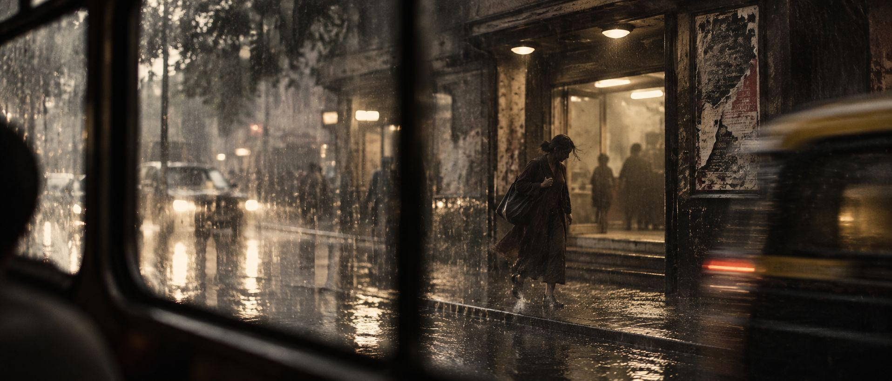

About
Cinema has a way of following you out of the room.
You leave with an image that changes how the street looks, or a character whose way of speaking stays in your ear. That attention to how we see and feel runs through VALENCE.
Founded by Stella John in Mumbai, VALENCE is an independent creative practice working globally across creative direction, film, photography, writing, branding and digital strategy. We bring those disciplines into close conversation, with the person and the work at the centre of it.

The name
We were interested in the feeling before the explanation.
VALENCE gives a name to our interest in connection: between an image and a memory, a person and their words, a piece of work and the people who encounter it. We pay attention to how those relationships are made.
Our approach
A different life calls for a different language.
An artist’s image, a founder’s essay and a public campaign ask for different kinds of attention. We take our cues from the person, subject and circumstances of the work. Its language and visual character grow from that understanding.
This is why our projects can look and sound very different from one another. The continuity is in the care we give them and the judgement behind each decision.
A note from Stella
I am interested in what makes somebody look twice.
Image placement · A-02
Stella John, at dusk
- Subject
- Stella, photographed, not generated. A camera or notebook in hand, unposed.
- Composition
- Three-quarter, eyes on the upper third, room enough around her to breathe.
- Light
- Window light at dusk, warm on skin, shadows left open.
- Why here
- A founder's note needs the founder's face, and the face should belong to the same world as the work.
Portrait, to be photographed · 4/5 desktop · 4/5 phone · dusk
I came here through music, film and photography, and those worlds still decide what I notice. I can watch a scene for the story and return to it for something in the light, or for a look that lasted a second longer than expected. I like work that rewards that second encounter.
That is also how I approach people. Before I write in somebody else’s voice, I want to understand what sounds true to them, what they would never say, and where the language they have been given fails them. I need to spend enough time in their world for the work to belong there.
VALENCE gives that way of working a home. We can make an identity, an image, a piece of writing or a campaign, and I want each to feel as if it could only have come from the person it is for.
The Journal is where that curiosity gets to go further. I love talking to people who are absorbed in something, whether it is cinema, a business, a building or a question they have spent years trying to answer. Often, the detail they barely think to mention is the one I am still thinking about afterwards.
We like what happens when people become absorbed in the conversation.
They reach for an example, remember something they had forgotten, explain a choice that once seemed obvious. The Journal is a place for that kind of attention. Through written conversations and essays, we spend time with people and subjects that interest us, allowing art, business and everyday life to find their own connections.
VALENCE grew out of Copious Space.
What have you been working on, or thinking about working on?
Write to us at buzz@vlnc.in. We would like to hear about it in your own words.